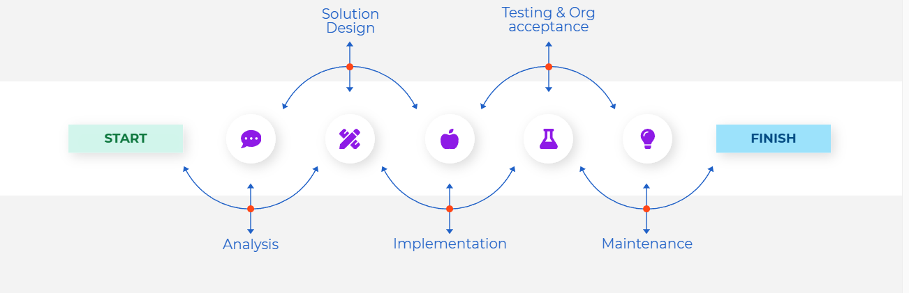

A Business Continuity Plan is a documented strategy that outlines how an organization will continue its critical business functions during and after a disaster or disruption. The BCP focuses on maintaining operations when infrastructure, personnel, or resources are partially unavailable.
Some key components of a BCP include:
Developing a BCP manual ensures organizations have a structured approach to monitor, track, and improve their continuity capabilities. (Keep in mind different companies will implement a BCP differently but they should be braodly similar in scope.)
Incident response is the process of preparing for, detecting, containing, eradicating, and recovering from cybersecurity incidents or other disruptive events. A well-defined incident response plan complements the BCP by minimizing operational disruption and protecting organizational assets.
Effective incident response reduces the duration and impact of incidents, ensures faster recovery, and helps prevent similar events in the future. Prompt and structured responses can safeguard sensitive data, maintain customer trust, and minimize financial losses.
Integrating incident response with the BCP ensures that an organization can maintain essential services while addressing threats, resulting in greater operational resilience and minimized downtime.
Cybersecurity Curriculum | Threats and Risk Management